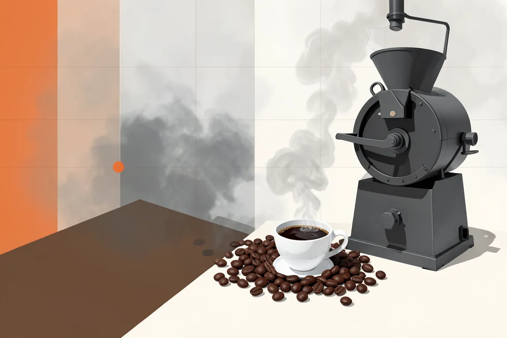

графические течения · 1955–now · также: Дизайн Braun, Меньше, но лучше, Десять принципов хорошего дизайна
Тихие матовые поверхности, приглушённая серая палитра, один оранжевый сигнальный цвет и элементы управления, которые показывают, что делают. Следует Дитеру Рамсу и Braun и снова появляется в калькуляторах, аудиотехнике и интерфейсах телефонов.

Главная идея
Хороший дизайн — это как можно меньше дизайна: продукт должен быть полезным, понятным и честным, а затем отступить.
Принципы дизайна
Ограничьте палитру тремя нейтральными (тёплые серые) и одним сигнальным цветом (оранжевый #E8590C), занимающим не больше 5% поверхности.
Группируйте элементы управления в подписанные зоны; у каждого текстовая подпись 12–14px и фиксированное место на сетке 4px.
Давайте каждому элементу одну задачу и делайте его состояние видимым: сплошная заливка для «вкл» и контур для «выкл».
Берите радиус 2–4px для кнопок и панелей; радиус не превышает 8px.
Набирайте весь текст одним неогротеском в 4 размерах: 12, 14, 18 и 32px.
Размещайте панели модульной сеткой из равных единиц 80–120px; выравнивайте каждый край по единице.
Окрашивайте только то, что сигнализирует: состояние, предупреждение или главное действие.
Антипаттерны
Декоративные градиенты, свечение и стеклянные эффекты